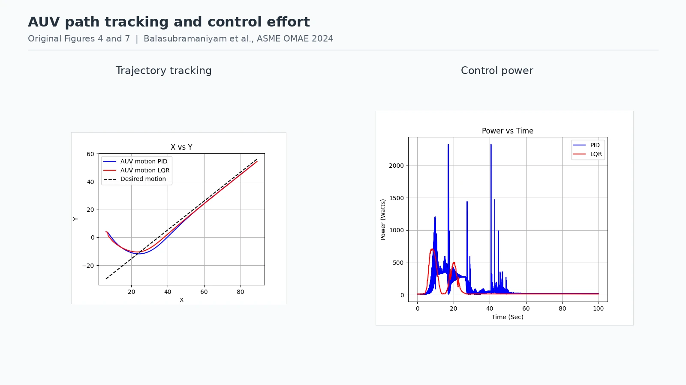

Introduction and objective
Autonomous underwater vehicles must navigate accurately while carrying a limited supply of onboard energy. Aggressive corrections can improve short-term path tracking, but the additional thruster effort may reduce mission range or prevent the vehicle from completing its task. The objective of this project was to determine how guidance and controller choice affect the trade-off among tracking accuracy, convergence time, robustness, and energy use.
Method
The study used line-of-sight guidance to prioritize forward motion and intermittent heading correction for an underactuated, torpedo-shaped AUV. Linear and nonlinear controllers were implemented and evaluated under hydrodynamic disturbances. Their behavior was compared using trajectory error, convergence time, and control effort, supported by hardware integration, system-level testing, and preparation for field deployment.
Results and evaluation
Both controller classes were able to follow the desired path, but they achieved that performance with different control demands. The simpler linear strategy reduced energy consumption by approximately 50% while producing only a modest increase in travel time. The comparison showed that the most aggressive tracking response was not the most effective choice when mission endurance was included in the evaluation.
Discussion and impact
The project reframes reliable control as a resource-allocation problem rather than an accuracy-only problem. For energy-constrained robots, accepting a small performance loss can preserve substantially more power and increase the likelihood of completing the mission. The result provides a practical basis for choosing controller complexity according to operational priorities.
My contribution
I implemented and compared the guidance and control strategies, analyzed tracking and energy trade-offs, and contributed to the AUV’s hardware integration and experimental testing. This work led to my first-author publication, “Performance Evaluation of Different Control Algorithms for Torpedo-Shaped AUVs,” presented at ASME OMAE 2024.
